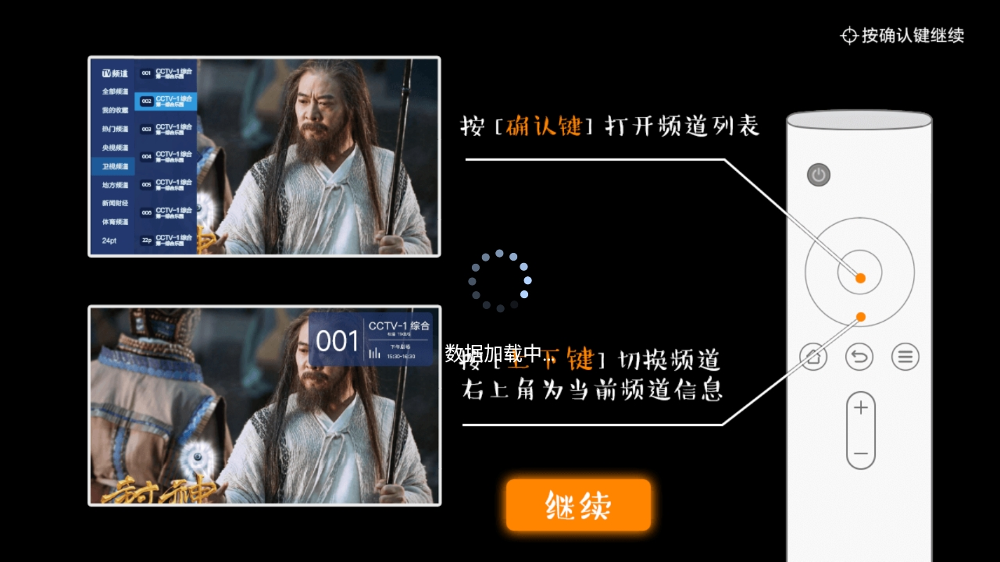

HIGHLIGHTS
把直播做成最省事的样子
界面按电视遥控器的逻辑来：不用在层层菜单里找功能，常用的操作就集中在两个键、三栏列表里。
两键上手
确认键开频道列表，上下键直接换台。首次启动有遥控器教学页，忘了随时回设置里重看。
分类找台
央视、卫视、体育、港澳台、地方频道……先在左栏切分类，再到中栏翻频道，比在总表里大海捞针快得多。
回看与预约
错过的新闻按时段补看，没到点的比赛提前挂上预约——列表最右一栏就是这两个入口。
我的收藏
把常看的新闻台、少儿台、本地台标进收藏，开机第一眼就是它们，家里老人也不用再翻分类。
SCREENS
装上就是这三块屏
引导页教按键，列表页选节目，剩下的时间都停在播放页——这正是看电视该有的样子。

央视频道
卫视频道
体育频道
咪咕体育
港澳频道
臺灣頻道
地方频道
生活频道
新闻财经
HOW TO USE
四套动作，覆盖日常所有操作
01
换台
播放中按 ↑ ↓ 直接换台；想精确挑台就按 确认键 呼出列表再选，右上角始终显示当前频道信息。
02
找台
左右键在「分类—频道—回看预约」三栏之间移动焦点，上下键翻项，确认键 切过去；知道要看什么题材，直接进对应分类最快。
03
收藏
在常看的频道上按 菜单键（或长按确认键）选「收藏」，之后左栏第一项「我的收藏」里一眼就能看到。
04
回看 / 预约
焦点移到列表最右栏：「回看」按时段补看播过的节目，「预约」把还没播的赛事、晚会提前挂上，到点不用守着换台。
FAQ
装与用，最常碰到的几件事
点「安装」时提示被禁止？
电视的来源权限没开对。到「设置 → 安全」里找到「允许安装未知应用」，对准备用来打开安装包的那个文件管理器开启，再返回重装。完整流程见安装步骤页。
打开一直黑屏、转圈？
先确认设备联网正常，然后退出应用重新进一次；再把路由器断电重启——直播流对网络抖动敏感，多数临时性加载问题到这一步就好了。
某个频道没画面，别的都正常？
这是单个频道源暂时的问题，不是设备坏了。换台确认后等几分钟再回来，节目单恢复后，这个频道的回看与预约也会一起恢复。
家里老人不会用？
只教两件事：确认键开列表、上下键换台。再把常看的几个台收进「我的收藏」，以后开机直接进收藏，不用碰分类。